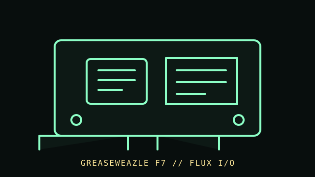

[ FLOPPY DRIVES // IDENTIFIED MODEL ]
Greaseweazle F7 Floppy Interface
Greaseweazle F7 is a USB-connected floppy-control and flux-acquisition interface for use with a separate compatible drive mechanism. It is not itself a floppy drive or a disk-image emulator.

MODEL IDENTIFICATION: Greaseweazle F7 board; record the silkscreened hardware version, firmware, cable, and connected drive model. The record distinguishes source-documented facts from model/revision-dependent behavior; it is not a compatibility guarantee.
Recorded specifications
| Catalog model | Greaseweazle F7 Floppy Interface |
|---|---|
| Device type | Controller-adjacent USB acquisition interface |
| Interface / connector | USB host connection and drive-side floppy signals; connector, drive voltage, and supported signals must be checked against the specific F7 board and official documentation. |
| Media / formats | No media capacity is attributed to the interface. Captured tracks/flux and converted disk-image formats depend on the drive, media, firmware, command options, and decoding workflow. |
| Revision caution | Confirm the complete model designation, nameplate, connector, board/firmware revision, and service-manual edition. Related family names are not proof of interchangeable parts or host support. |
Host and controller compatibility
- Requires a separately powered/compatible floppy mechanism and host software. The controller is not a drive and does not make every drive connector or voltage safe.
- Use the official model/version documentation for wiring, pinout, drive power, supported drives, firmware, and acquisition commands. Do not apply PC drive power to an unidentified interface or mechanism.
- Flux capture can retain information not represented by a normal filesystem copy, but successful decoding and image compatibility are separate steps. Keep the original capture alongside any converted derivative.
Safe preservation and cleaning
Inspect the board and cable with all power disconnected. Do not clean the drive heads or media unless their own service/manual procedures justify it. Preserve raw captures, command logs, firmware version, drive identity, and checksums; never overwrite the only capture.
For preservation, photograph labels and connector/board markings before service; document the host, controller, software, settings, and observed condition. Keep original media or raw captures intact and verify checksummed copies before making derivatives.
Manufacturer manuals & archival references
- Greaseweazle — official project and hardware documentationProject source and supported hardware information; consult documentation for the F7 board and current firmware.
- Greaseweazle Wiki — official documentationOperating and hardware notes from the project documentation.
- Library of Congress — Digital format sustainabilityPreservation planning reference; it does not certify a particular capture or decode.
Archive scans and project pages may cover a family or a particular revision. The full model/revision-specific manufacturer manual takes precedence. Capacity or recording mode is omitted where it cannot be tied to the cited model and format.